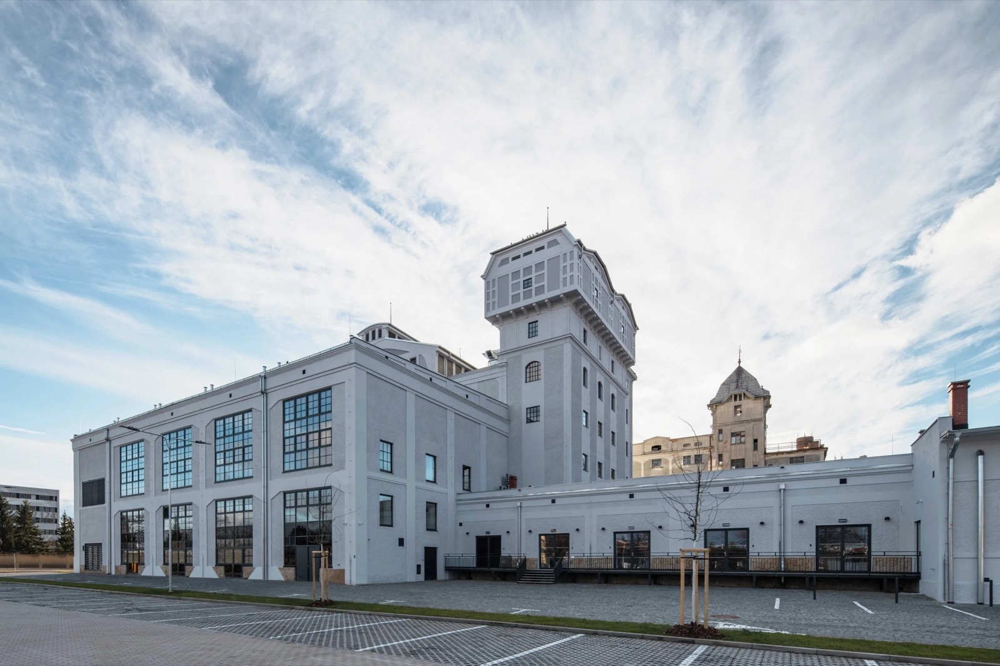
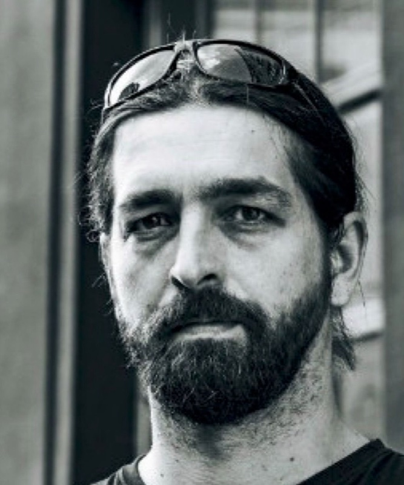
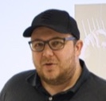

Blok 01 — Kdy a kde
- Kdy
-
Začátek: upřesníme
Vstup: Volný
- Kde
-

TechTowermístnost Z6, „Josef Průša“
Koterovská 152, Plzeň 2-Slovany
Parkování: přímo v areálu TechTower je vyhrazené parkoviště.
Blok 03 — Program
Na pódiu
Urza
Anarchokapitalista, tvůrce Svobodného přístavu

Milan „Sodomák“ Půlkrábek
Information Security Consultant
František Kohout
Blázen do miningu
David Kacetl
Programátor a bitcoinový nadšenec

Michal Sýkora
Lídr plzeňské jednadvacítky
Blok 04 — Sponzor
Děkujeme partnerovi
Profesionální poradenství v oblasti kryptoměn a těžby.
Web sponzoraBlok 05 — Archiv